Study on Thrust-time Curve of a Solid Rocket Propellant

a brief over this article
During my bachelor's degree in Mechanical Engineering, I was able to get my first scientific research that was approved by the university and funded by them. The subject of it was somehow not common in mechanical engineering: The study of the thrust-time curve of different geometrical sections on a solid propellant. Since this work was solely conducted in portuguese, and never published on the web, I'm aiming to bring this study to my website to expand the reach, now, in English.
1. Introduction
1.1 Objective and Research Problem
The objective of this work is to investigate and characterize, through a reduced-scale model, how the variation of parameters — mainly the cross-sectional geometry of the grain — influences the thrust-time curve of specific motors.
The justification for carrying out this work and compiling this data lies in their importance for the chamber sizing process, since they directly affect the motor's final characteristics. Furthermore, the cross-sectional grain geometry has great influence on atmospheric data collection vehicles, signaling systems, aerospace research, and applications of the Brazilian Space Agency and its divisions. Since they have lower specific impulse, solid propellant motors represent an essential category in applications requiring large thrust delivery relative to time, and may also be part of a hybrid propulsion system.
1.2 System Characterization
Propulsion is the act of generating a force through a combination of elements that overcome other forces acting on a body, with the purpose of manipulating its position, velocity vector, and acceleration (TAYLOR, 2009). It is characterized by the force called thrust, used to place a body on its specific trajectory as well as to increase or decrease linear momentum. Mathematically, it is the force that generates the change of linear momentum in a body. For rocket propulsion systems specifically, the methods vary according to the required amount of thrust over a period of time. The systems consist of releasing a quantity of gas at controlled pressures and velocities so that a resultant force acts in the opposite direction to the flow. The linear momentum of a body can be defined as:
Where p is the linear momentum present in the body of mass m with scalar velocity v. We designate the force F as Thrust, where:
Equation 1.2 better describes how variations in both velocity and mass affect the force F produced by the system over time. This is the most important concept when selecting a thrust system for a unique application. The amount of force generated at any given instant depends on the variation in velocity and mass of the entire system.
This is of utmost importance in a propulsion system used in rockets of any type and function. It is the relationship that shows how the variation in fuel mass also influences the resulting force propelling the rocket. That is: with internal pressurization of the combustion chamber by propellant burning, the internal pressure becomes greater than the external pressure, forcing the combustion gases through a geometrically defined and optimized nozzle, which further accelerates the exhaust to supersonic velocities. The rocket then overcomes inertia when this force generated by gas expulsion exceeds all forces acting on the body. The gas exhaust force formula is given by:
Theoretically, in the first term of the equation, the gas exit velocity must remain constant during propellant burning; thus, force variation is driven by increases or decreases in fuel mass flow rate rather than by changes in exhaust velocity, which is defined by the motor's internal components: fuel chemical composition, combustion chamber geometry, and nozzle shape. In the second term, mass remains constant over time and the temporal velocity variation is defined as the acceleration of the flowing gases, characterized by the resultant force component generated by the escape of mass being accelerated through the nozzle geometry. Since pressure variation exists, the resultant force can be expressed as the following equation:[1]
Where F_thr is the force generated by the pressure difference between the internal pressure at the nozzle exit and the external pressure, across the throat cross-sectional area A_e. Adding the left-hand term of equation 1.3 to equation 1.4 gives the thrust generated by the internal combustion process.
Equation 1.5 defines the parameters governing motor behavior. The exhaust gas velocity and pressure are determined by the propellant's chemical combination as well as the motor and nozzle configurations.
1.3 Impulse
Thrust is the primary driving force of the system; it is this force that places the rocket on its specific trajectory and imparts velocity and acceleration gains. Despite being an important concept, thrust alone only partially describes conservation of linear momentum and says little about temporal variation. Understanding how thrust is influenced by the time elapsed since ignition is of utmost importance for project development; it is through this analysis that the motor's application is classified and characterized. Impulse can be divided into two fundamental concepts: total impulse and specific impulse.
Total Impulse is defined as the time integral of the thrust curve during motor operation, as in the formula:
By this definition, a motor can deliver large thrust over a short time interval or small thrust over a long time interval — both yielding the same Total Impulse. Graph 1 illustrates the definition of Impulse.
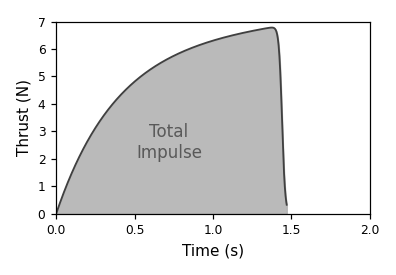
By Newton's second law, the force F can be rewritten as the time derivative of momentum, or:
This equation demonstrates that a force applied to an object over a period of time produces a change in linear momentum. Considering the force generated as a mass variation at constant velocity, impulse can be formulated as:
This relationship explicitly shows the importance of mass flow rate variation in achieving total impulse. The change in linear momentum now appears in the impulse formula because propellant mass and the resulting gas velocity are not constant and influence the force distribution over time. Therefore, mass variation becomes a fundamental detail for motor sizing, requiring a new concept to quantify and qualify motor characteristics; this concept must capture how important mass change is in the system and how this characteristic influences burning behavior. The following sequence of equations shows how this relationship can be tabulated and the motor characterized more clearly. We know that Impulse can be defined as:
The specific impulse of a motor is the duration, in seconds, for which a motor delivers thrust while the initial mass decreases under Earth's gravitational acceleration. The higher the specific impulse, the more efficiently Δv is imparted to the system. Motors used to place vehicles into orbit have a low I_sp (around 200 to 500 seconds) because they are designed to deliver maximum thrust in a short time, requiring a very large propellant mass. On the other hand, spacecraft already in orbit may need thrust only to correct their trajectory or for specific docking maneuvers; in such cases, the specific impulse of this type of motor is typically higher (around 2000 to 3500 seconds).
1.4 The Influence of Cross-Sectional Grain Geometry
The behavior of the thrust-time curve is governed by the variation of the fuel burning area, which directly influences the thrust at any given instant, resulting in different combustion chamber pressurization for each cross-sectional grain geometry (SUTTON, 2010). Drawing 1 shows the different effects on the thrust-time curve caused by geometric variations in the grain cross-section.
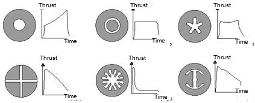
Regardless of chamber pressurization conditions, burning area regression occurs perpendicularly at every instant, as can be seen in Drawing 2.
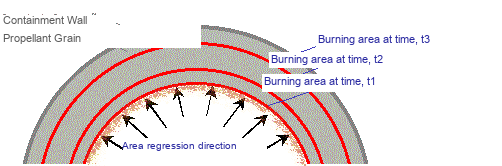
An important aspect is that area regression at times t1, t2, and t3 is not constant, because pressure variation directly affects the propellant burn rate following Saint Robert's Law. As can be verified in Graph 2, for different propellant configurations under the same initial conditions, there is significant differentiation in burning properties under different pressurization environments. The parameter 'n' characterizes the grain composition. The thrust delivery of a propellant with 'n' close to zero can be better controlled, resulting in lower internal chamber pressure. Based on the fuel's chemical composition, the same cross-sectional geometry cannot be used for motors targeting the same thrust value — a sudden pressure increase caused by a propellant with 'n' close to 1 can cause catastrophic failure, efficiency loss, or unexpected behavior (TAYLOR, 2009).
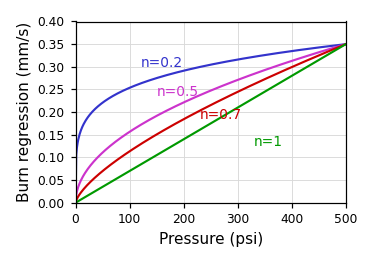
2. Method
2.1 Research Planning
Initially, the concept was thoroughly developed through research at various laboratories and organizations that already work professionally and commercially with this type of motor. Given the project's high level of complexity, a deep analysis of the relevant standards was required — both for the chemical and physical integrity of the project and because it poses a risk to the surrounding environment during construction and testing. Since experimental validation is expressly required for project qualification, all necessary precautions were taken to ensure successful data collection without information discrepancy.
To begin the research, all material necessary for the motor's primary sizing was gathered: Excel® spreadsheets, bibliographies from various authors, assembly and manufacturing procedures, calculation reports, and software for data collection and component pre-sizing. Beyond simulation data, the motor underwent laboratory inspection, with its entire assembly accompanied by precise measurements to prevent any leakage or test-to-test inconsistency. The data collection system was also developed to ensure measurement precision and positively influence results while guaranteeing safety throughout. It is worth noting that for comparative measurements, the same motor configuration will be used, along with the nozzle, internal ignition components, and thermal insulation; however, some grain configurations may exceed the project's limits, requiring preventive safety changes, all clearly specified in the reports and procedures to be followed. Modifications to the grain cross-section will also aim for ease of construction, as extremely advanced geometric configurations are nearly impossible to manufacture.
2.2 Propellant Selection
The propellant used in this system has two main components: the fuel and the oxidizer. For an initial experiment, the agents must not be under restricted control and must have characteristics that guarantee combustion stability and safe handling; propellants with complex chemical configurations may present instability and be harmful to the project and the surrounding environment.
Regardless of the fuel selected, all of them tend to maintain the same geometric configuration to maximize volumetric efficiency within the motor, presenting a hollow cylindrical configuration. For the project, the Bates grain configuration was selected because it provides a higher internal burning area ratio, influencing the internal chamber pressure; another reason for selection was the possibility of combining different sections in a motor configuration, which can yield interesting data collection results. Drawing 3 compares the Bates configuration with the standard configuration, as well as the geometric characteristics of the grain within the chamber.[2]
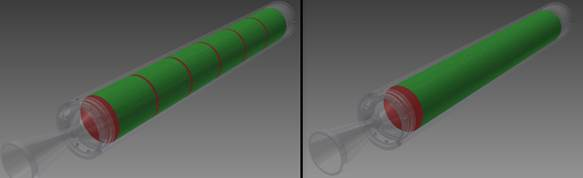
Data on the possible fuels to be used was collected and tabulated with each fuel's relevant characteristics according to Table 1.
Thus, with safety in mind, propellant selection followed these criteria:
- Combustion stability and predictability of results.
- Easy handling and manufacturing, including molding and demolding.
- Ease of acquisition and low cost.
- Safety at all stages of manufacturing and ignition.
- Thermal characteristics and chemical properties.
| Fuel Characteristics (Theoretical) | KN-Dextrose | KN-Sucrose | KN-Sorbitol |
|---|---|---|---|
| Specific Impulse (@ 1000 psi) | 164 s | 166 s | 164 s |
| Characteristic Exhaust Velocity | 912 m/s | 947 m/s | 938 m/s |
| Combustion Temperature (@ 1000 psia) | 1710 K | 1720 K | 1600 K |
| Density | 0,001879 g/mm³ | 0,001890 g/mm³ | 0,001841 g/mm³ |
| Burn Rate (@ 1 atm) | 2,13 mm/s | 3,96 mm/s | 2,60 mm/s |
| Burn Rate (@ 1000 psia) | 12,93 mm/s | 15,29 mm/s | 11,3 mm/s |
| Ignition Temperature | > 573,15 K | > 573,15 K | > 573,15 K |
The selected propellant was Potassium Nitrate-Dextrose (KNDX) in a configuration of 65% oxidizer and 35% fuel, as it presents advantages over the others for the reasons described above; this was the result of research into its chemical and physical properties compared to the data of the various other propellants.
2.3 Motor Sizing
2.3.1 Combustion Chamber Sizing
It was established at the outset of the project that the motor would have dimensions qualifying it for the M classification category. Based on the initial assumptions made for its development and the difficulty and restrictions in obtaining a specific alloy for the combustion chamber, all motor sizing was based on commercially available products that could be used in the process. Image 1 was used for sizing and for predicting some theoretical results, enabling a first analysis through the partial results generated.[3][4]
For combustion chamber selection, the standard NBR 5590 (ASTM A-53) was used, and an S/C GRB SCH40 3" pipe was chosen, with a Yield Strength of 240 MPa and an Ultimate Tensile Strength of 415 MPa. From Image 1, it can be verified that for a Kn of 422, the throat cross-sectional area where gases will be accelerated must be maintained at 185 mm². Since nozzle material erosion occurs during exhaust, the diameter must be approximated to compensate for this effect throughout the tests.[5]
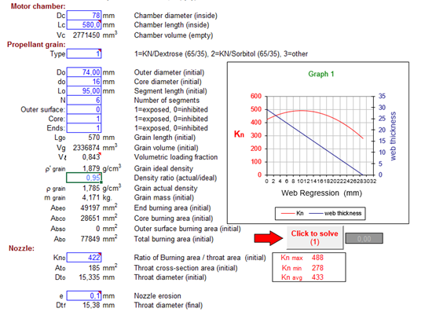
For combustion system sizing, four different grain cross-sectional geometries were selected to compose the comparative tests. The grain cross-sections can be seen representatively in Drawing 4.
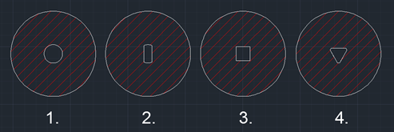
For system verification, Geometry 1 was used as the standard, since it has the same area regression in all directions. A theoretical pressure behavior was established to supply the values needed for combustion chamber sizing. Graphs 3 and 4 show how the pressure and thrust gains in the system vary over time.
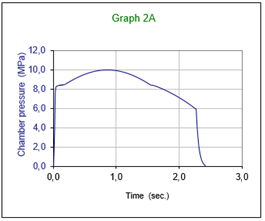
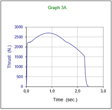
The combustion chamber was verified using formula 2.1 established by Roark. The formula takes into account the Yield Strength of the pipe material as well as the safety factor established in the project.
Where t is the pipe wall thickness, σYS is the Yield Strength of the pressure vessel material, D0 is the initial internal diameter of the chamber, and a safety coefficient CS established as 2.5; the maximum design pressure P_d becomes 11.85 MPa. Since the system will reach a maximum pressure of approximately 10.0 MPa, the pressure vessel is qualified as safe for combustion of this geometry. It is worth noting that variation in grain cross-sectional geometry results in different internal pressure distributions within the chamber. Predicting these results is complex and requires a specific study, since area regression during burning does not follow a consistent direction.
2.3.2 Motor End Cap Sizing
The motor end cap, commonly known as a Bulkhead, serves to seal the side opposite to the gas flow. The end cap also has the function of igniting the combustion system through a device located at its center. It was developed based on safety concepts and features shear pins sized to release in case the motor is exposed to a pressure distribution greater than that determined by the project, thereby reducing the risk of motor explosion. Through mechanical strength calculations, the use of ten (10) retention pins was determined. These must shear the end cap when the internal chamber pressure exceeds 13.0 MPa.
2.4 The Data Collection System
The data collection system was assembled on the test stand with the function of obtaining the motor's operating parameters. Through a load cell, the collected data will indicate the thrust resulting from propellant combustion. The motor was positioned with the ignition system in contact with the load cell and aligned with the test stand. The motor prepared for the test can be seen in Photo 1.
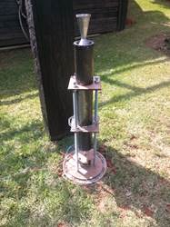
3. Conclusions and Results
3.1 Test Preparation
For the first test, grain sections with circular geometry at their center were used; these served to gather data for comparison with the other geometries and to verify the physical integrity of the motor. After the ignition and collection systems were ready and verified, the perimeter was assessed to ensure the surrounding environment would not be compromised in any way; thus, the test area was fenced off and all safety procedures were checked.
3.2 Results
The first thrust signal was obtained through the load cell from the small variation in internal chamber pressure resulting from ignition, followed almost instantly by the start of propellant combustion. Shortly after approximately 1.3 seconds, the motor suffered catastrophic failure, rupturing the end cap due to internal over-pressurization, and the remaining propellant was ejected from the top of the motor. A visual analysis was performed after the failure and it was found that all the screws securing the end cap were expelled; however, it was concluded that the thermal protection of the end cap did not withstand the heat generated by combustion, which weakened the aluminum's resistance, lowering its Ultimate Tensile Strength and causing rupture at a pressure lower than calculated. Photo 2 shows the sequence of events that occurred during the test.
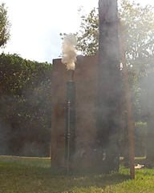
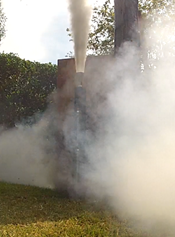
3.3 Result Analysis
A thorough analysis of the events shows that the motor behaved far more aggressively than expected. Graph 5 demonstrates the thrust distribution over time as collected by the data acquisition system.
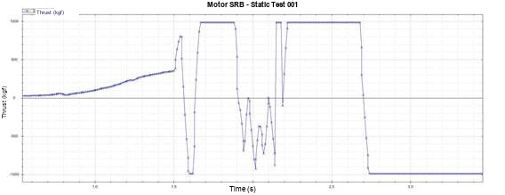
Since catastrophic failure occurred in the motor, the graph is interpreted to identify the points that characterized such failure, as well as the moment of end cap rupture and the functioning of the ignition system. For this reason, a time interval corresponding to regular operation up to the moment of end cap rupture and data collection system degradation was isolated. In Graph 6, the time interval is separated for better visualization of what occurred.
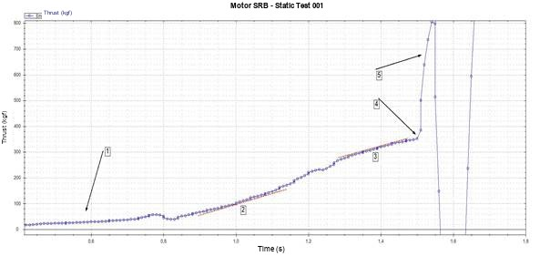
At marker 1, the instant at which the motor undergoes ignition and begins to build internal pressure is verified. At 2, propellant combustion is nearly linear and indicates good internal pressure development. At 3, the motor begins to stabilize and almost reaches its maximum thrust point. At 4, over-pressurization of the chamber occurs along with gas leakage through the threaded holes. At 5, the end cap detaches and the load cell is invalidated, having suffered major damage from contact with the igniter. Photos 3 and 4 show the end cap and igniter assembly after detachment and the load cell after the test.
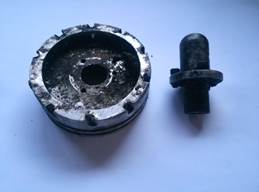
references
| ^ | [1] | ALMEIDA, D. S; NETO, C. M. Materials for manufacturing high-performance pressure vessels. p 3-6. Oct. 1997. |
| ^ | [2] | Canadian Association of Rocketry. CAR Motor Certification Committee: Motor Testing Manual. 2002. Rev. 3.1. Available at http://www.canadianrocketry.org/files/CAR_Motor_Testing_Manual.pdf. Accessed on November 23, 2013. |
| ^ | [3] | DAVENAS, A. Development of Modern Solid Propellants. Journal of Propulsion and Power, v. 19, p. 1101-1110, November-December 2003. |
| ^ | [4] | HUNLEY, J. D. The History of Solid Propellant Rocketry What We Do And Do Not Know. AIAA. P. 2-7, Jun. 1999. |
| ^ | [5] | LEE, T. W. Aerospace Propulsion. 2013. 1 ed. Wiley, 2013. 316p. |
| ^ | [6] | MARTIN, J. L. T. Rocket and Spacecraft Propulsion: Principles, Practice and New Developments. 2008. 3 ed. Springer, 2009. 390p. |
| ^ | [7] | National Association of Rocketry. Level 3 High Power Certification Requirements. 2012. Available at http://www.nar.org/pdf/L3certreq.pdf. Accessed on June 7, 2014. |
| ^ | [8] | NAKKA, R. Solid Rocket Motor Theory: Propellant Grain. 2001. Available at: http://www.nakka-rocketry.net/th_grain.html. Accessed on October 19, 2013. |
| ^ | [9] | NAKKA, R. Solid Propellant Burn Rate. 2003. Available at: http://www.nakka-rocketry.net/burnrate.html. Accessed on October 15, 2013. |
| ^ | [10] | NAKKA, R. Strain Gauge Load Cell for Thrust Measurement. 2007. Available at: http://www.nakka-rocketry.net/strainlc.html. Accessed on March 2, 2014. |
| ^ | [11] | TAYLOR, S. T. Introduction to Rocket Science and Engineering. 2009. 1 ed. New York: CRC Press, 2009. 314 p. |
| ^ | [12] | TUALATIN PHYSICS. Translated Image. Available at: http://www.tuhsphysics.ttsd.k12.or.us/Research/IB11/HumbLockToddHarr/index_files/image005.. Accessed on August 19, 2013. |
| ^ | [13] | SUTTON, P. G; BIBLARZ, O. Rocket Propulsion Elements. 2010. 8 ed. Wiley, 2010. 784 p. |